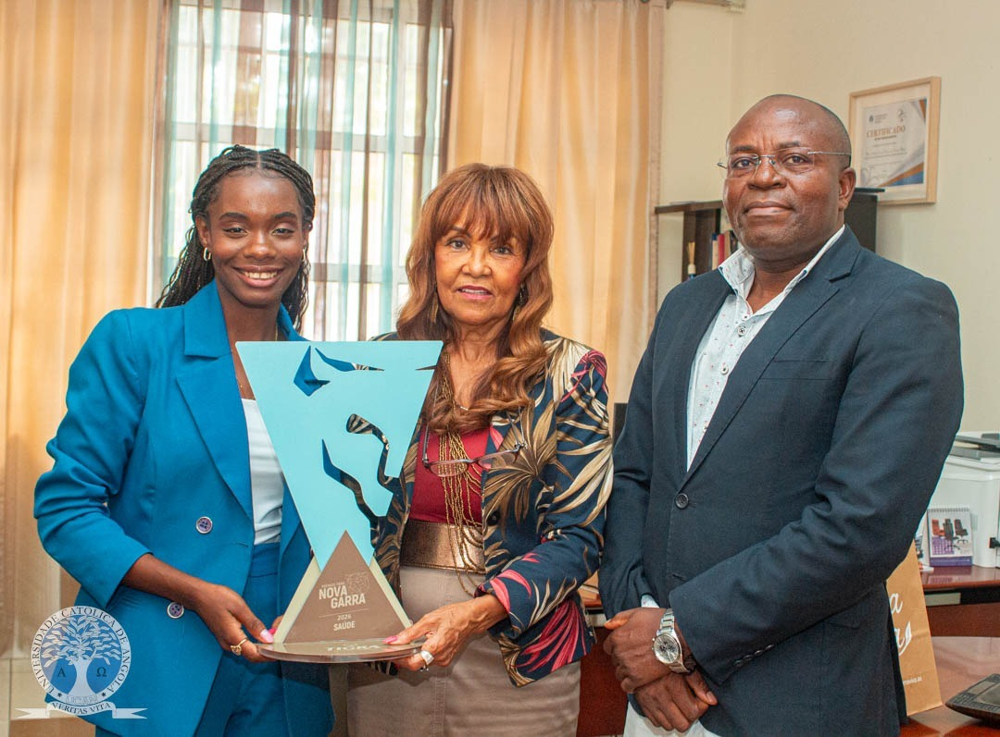
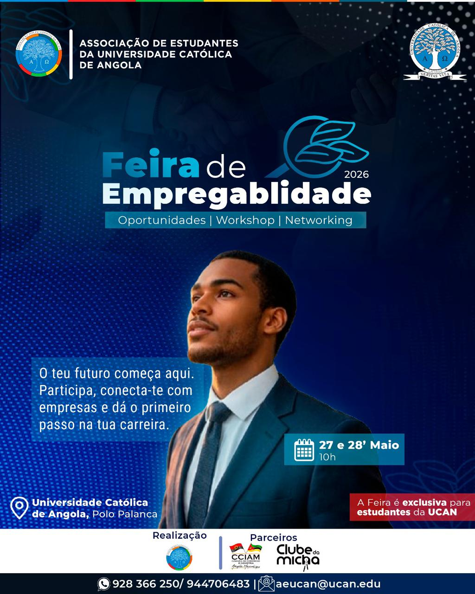
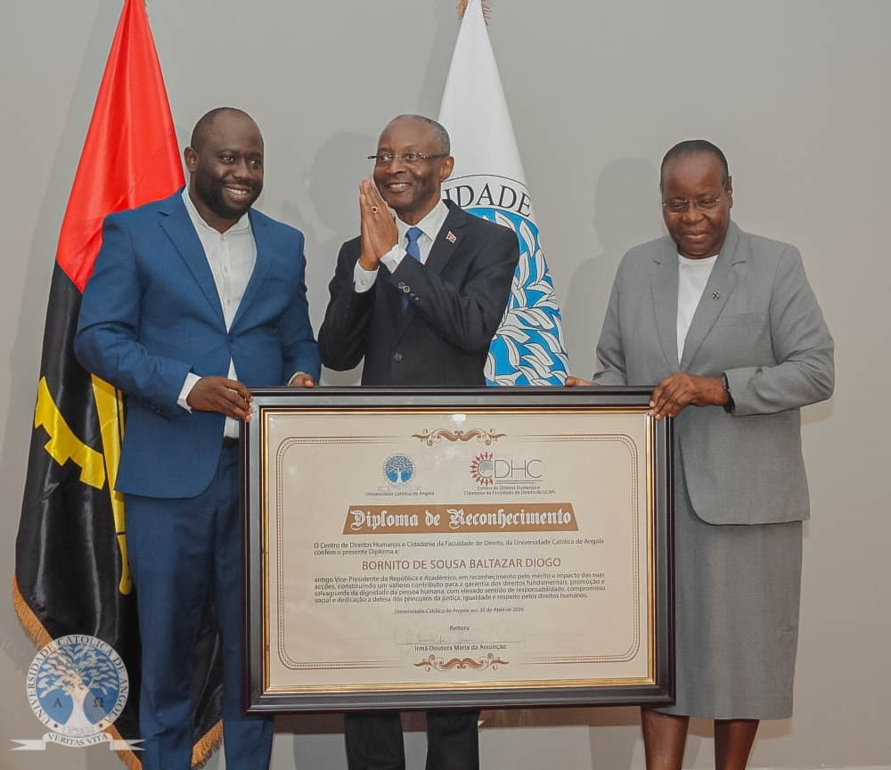
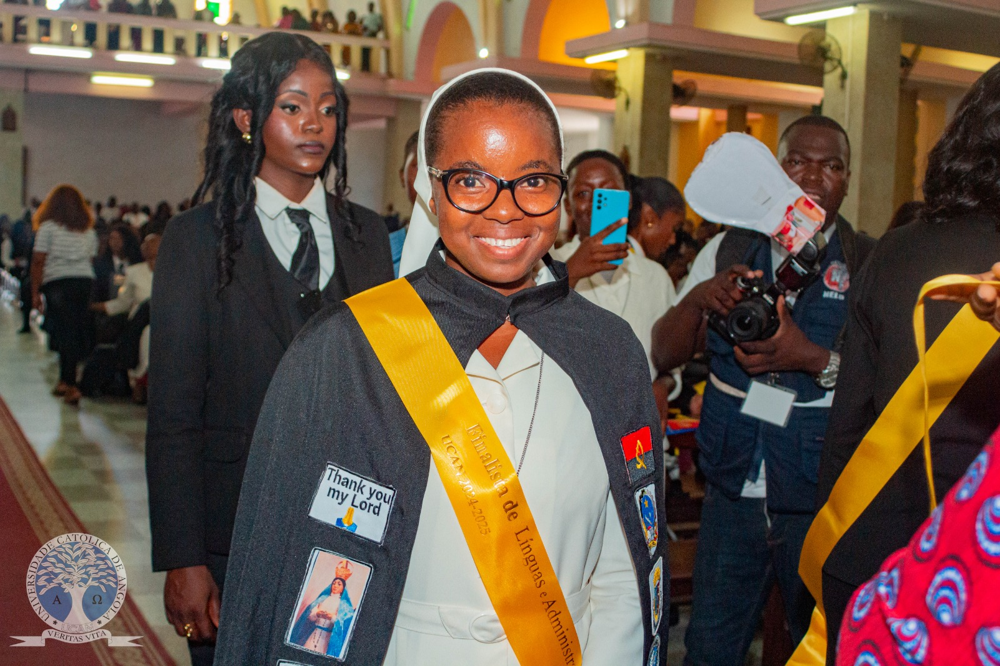

Todas as Notícias
Explore as histórias que estão a acontecer na UCAN
 🎓 Cerimónia
🎓 Cerimónia
UCAN | ENCERRAMENTO DO ANO ACADÉMICO 2025-2026
A Universidade Católica de Angola (UCAN) realizou, neste sábado, 27 de Junho de 2026, pelas 9h00, a cerimónia de Encerramento do Ano Académico 2025/2026...
Ler mais → 🎉 Evento
🎉 Evento
UNIVERSIDADE CATÓLICA DE ANGOLA REALIZA COM SUCESSO A 23.ª EDIÇÃO DO DESFILE ACADÉMICO
A Universidade Católica de Angola (UCAN) realizou, no passado dia 20 de Junho, sábado, no Largo da Mutamba, a 23.ª Edição do Desfile Académico, um dos mais importantes eventos da vida estudantil...
Ler mais →
🏅 PrémiosESTUDANTE DA UCAN DISTINGUIDA COM O PRÉMIO TIGRA NOVA GARRA NA CATEGORIA SAÚDE
Elisabeth Miguel, estudante do 1.º ano do curso de Nutrição da Universidade Católica de Angola (UCAN), foi distinguida na categoria Saúde da 6.ª edição dos Prémios Tigra Nova Garra...
Ler mais → 🎓 Academia
🎓 Academia
FACULDADE DE CIÊNCIAS HUMANAS | PÓS-GRADUAÇÃO EM GESTÃO DE PESSOAS 360º
A Coordenação da Pós-Graduação Profissional em Gestão de Pessoas 360°, da Faculdade de Ciências Humanas da Universidade Católica de Angola...
Ler mais → 🌍 Internacional
🌍 Internacional
UCAN REFORÇA INTERNACIONALIZAÇÃO COM PARTICIPAÇÃO NA INTERNATIONAL STAFF WEEK 2026 DA UNIVERSIDADE DE BARCELONA
A Universidade Católica de Angola (UCAN), através do seu Comité de Ética em Investigação em Seres Humanos (CEISH-UCAN), marcou presença na International Staff Week 2026...
Ler mais → 🎓 Academia
🎓 Academia
CENTRO DE DIREITOS HUMANOS E CIDADANIA DA FACULDADE DE DIREITO DA UNIVERSIDADE CATÓLICA DE ANGOLA
O Centro de Direitos Humanos e Cidadania realizou, no dia 01 de junho, um Workshop dedicado ao "Desenvolvimento dos Princípios Africanos sobre a Liberdade Académica"...
Ler mais → 🌍 Internacional
🌍 Internacional
UNIVERSIDADE CATÓLICA PARTICIPA NO 1º FÓRUM DE REITORES BRASIL-ÁFRICA NO CENTRO DE CONVENÇÕES DO BRASIL
A Universidade Católica de Angola participa, de 25 a 27 de Maio de 2026, do 1.º Fórum de Reitores Brasil-África, que decorre no Centro Internacional...
Ler mais → 🎉 Evento
🎉 Evento
UCAN | PASTORAL UNIVERSITÁRIA - DIA DE ÁFRICA NA UNIVERSIDADE CATÓLICA DE ANGOLA
A Universidade Católica de Angola realizou, na manhã desta segunda-feira, 25 de Maio, no hall da instituição...
Ler mais → 🎓 Academia
🎓 Academia
UNIVERSIDADE CATÓLICA DE ANGOLA REFORÇA PREPARAÇÃO INTEGRAL DOS FINALISTAS
A Universidade Católica de Angola realizou, no âmbito da Semana dos Finalistas 2025/2026, uma jornada de actividades académicas e formativas...
Ler mais → 🌍 Internacional
🌍 Internacional
UCAN RECEBE REITOR DA UNIVERSIDADE DA POLÓNIA
A Universidade Católica de Angola recebeu a visita oficial do Magnífico Reitor da John Paul II Catholic University of Lublin da Polónia...
Ler mais → 🎓 Academia
🎓 Academia
BIBLIOTECA DA UCAN PROMOVE 5.ª EDIÇÃO DO OPEN DAY
A Direcção da Biblioteca Monsenhor José Alves Cachadinha da Universidade Católica de Angola realizou, nos dia 23 de Abril e 14 de Maio do corrente ano...
Ler mais → 🎓 Visita Académica
🎓 Visita Académica
FACULDADE DE CIÊNCIAS HUMANAS REALIZA VISITA ACADÉMICA À TPA
A Faculdade de Ciências Humanas da Universidade Católica de Angola (UCAN), por intermédio do Gabinete de Coordenação de Estágios, realizou no dia 13 de Maio do corrente ano uma visita académica à Televisão Pública de Angola (TPA)...
Ler mais →
💼 CarreirasFEIRA DE EMPREGABILIDADE DA UCAN
A Feira de Empregabilidade da UCAN é onde a preparação encontra oportunidades reais que mudam destinos. Empresas procuram talentos...
Ler mais →
🏅 HomenagemUCAN | CERIMÓNIA DE HOMENAGEM
Decorre no Edifício Michael L. Kennedy da Universidade Católica de Angola a Cerimónia de Homenagem ao Doutor Bornito de Sousa Baltazar Diogo...
Ler mais → 🤝 Cooperação
🤝 Cooperação
PROTOCOLO DE COOPERAÇÃO ENTRE UCAN E ARC
A Universidade Católica de Angola (UCAN) e a Autoridade Reguladora da Concorrência (ARC) formalizaram um importante Protocolo de Cooperação Institucional...
Ler mais →
🎓 CerimóniaUNIVERSIDADE CATÓLICA DE ANGOLA OUTORGA DIPLOMAS A 423 NOVOS LICENCIADOS
A Universidade Católica de Angola (UCAN) realizou a sua XXII Cerimónia de Outorga de Diplomas aos licenciados do ano académico 2024/2025, marcando mais um momento de elevada relevância académica e institucional...
Ler mais →